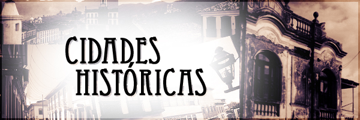

Congonhas
Teve origem em 1757 quando foi fundado o Santuário do Bom Jesus de Matosinhos, por Feliciano Mendes, de Guimarães, nascido em Portugal, de início modesta cruz e oratório; ele era tão pobre que até morrer, em 1765, pedia esmolas.
Diamantina
Conhecida inicialmente como Arraial do Tijuco ou Tejuco, a cidade emancipou-se do município do Serro em 1831, passando a se chamar Diamantina por causa do grande volume de diamantes encontrados na região. Essas pedras eram extraídas em grandes quantidades pela Coroa de Portugal, durante o século XVII.
Mariana
A origem da cidade remonta a 1696 quando foi fundado o arraial do Ribeirão do Carmo. O povoado foi elevado a vila e concelho em 1711. Em 1745 tornou-se na primeira cidade de Minas Gerais, com a designação de Mariana, em homenagem à rainha D. Maria Ana de Áustria, esposa do rei D. João V. Foi também nesse ano criado o bispado.
Ouro Preto
A vila foi fundada em 1711 pela junção desses vários arraiais, tornando-se sede de concelho, com a designação de Vila Rica. Em 1720 foi escolhida para capital da nova capitania de Minas Gerais. Em 1823, após a Independência do Brasil, Vila Rica recebeu o título de Imperial Cidade, conferido por D. Pedro I do Brasil, tornando-se oficialmente capital da então província das Minas Gerais e passando a ser designada como Imperial Cidade de Ouro Preto.
Sabará
Tem origem num arraial de bandeirantes que apareceu no fim do século XVII. O povoado cresceu e foi criada a freguesia em 1707, que foi elevada a vila e município em 1711, com o nome de Vila Real de Nossa Senhora da Conceição do Sabará. É cidade desde 1838.
São João del-Rei
O Arraial Novo do Rio das Mortes, que deu origem à cidade, foi fundado entre 1704 e 1705. Porém, a região já era ocupada desde pelo menos 1701, quando Tomé Portes del-Rei se estabeleceu na região do Porto Real da Passagem (hoje nas proximidades dos bairros de Matosinhos em São João del-Rei e Porto Real em Santa Cruz de Minas).
Tiradentes
Suas antigas denominações foram "Arraial Velho de Santo Antônio", e "Vila de São José do Rio Mortes" e cidade de São José del-Rei. O nome São José resulta de homenagens ao então príncipe de Portugal D. José I. A vila de São José resultou do desmembramento da vila de São João del-Rei em 1718. As lavras de São José del-Rei foram descobertas por João de Siqueira Afonso, em 1702, nos primórdios do século XVIII.